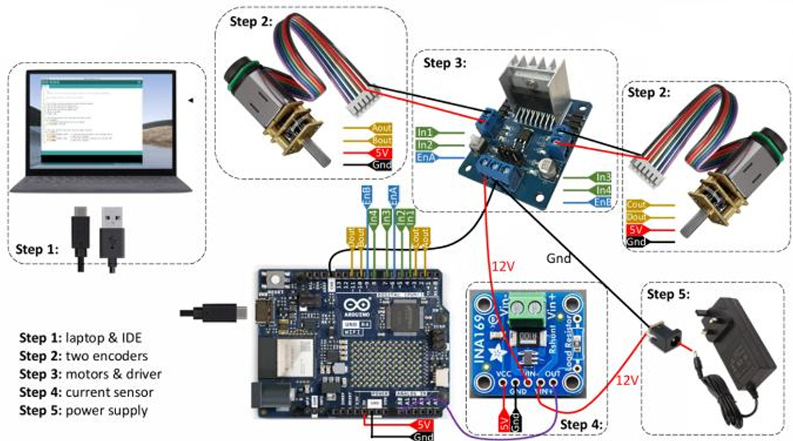

Overview
Designed a drawing robot controlled by MATLAB, with firmware, motor control, and a graphical user interface for motion input.
Approach
- MATLAB UI sends desired coordinates to an Arduino-driven robot.
- Motors use encoders for position feedback and path execution.
- Implemented PID tuning and collision detection using current monitoring.
Outcome
The robot could draw shapes like squares and respond to commanded positions. Noise and current sensing were used to explore collision thresholds.
Project visuals
